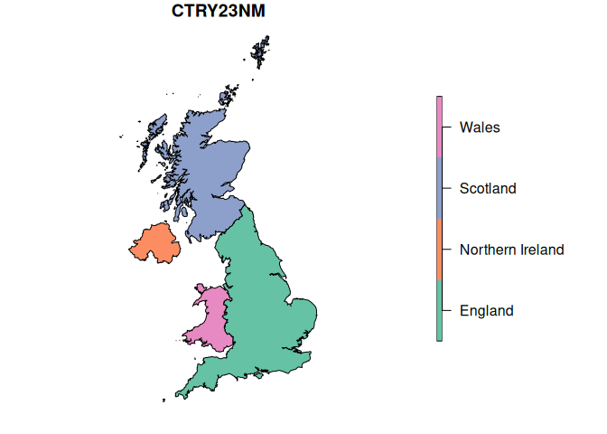

[!WARNING]
This package is highly experimental and is still a WIP. Expect uncomplete features, frequent breaks, lack of documentation and changes in the API.
Because UK Geographies are complex enough1, working with them should be easy enough.
The goal of {UKgeogRaphies} is to provide an interface to easily retrieve geospatial data from ONS’ Geoportal and make it usable within R.
So far it provides very limited functionality to download boundaries in the UK and convert them to sf objects.
Acknowledgement: this packages is highly inspired (feature wise) by {UKgeog}, which ceased to work after ONS changed their API and has not been maintained since 2022.
Installation
You can install the development version of ukgeographies from GitHub with:
# install.packages("devtools")
devtools::install_github("WarwickCIM/ukgeographies")Getting geographical boundaries
So far, this package provides two functions to download a selected boundary from ONS geoportal and convert it into a sf object: boundaries_get() and boundaries_select()
boundaries_get() will construct the API query to download the desired boundary based on the combination of three parameters (Boundary type, Date and Detail Level).
library(ukgeographies)
# Get a sf object from
countries_2023 <- boundaries_get("CTRY", 2023, "BUC")
#> ℹ Querying ONS API
#> ✔ Querying ONS API [40ms]
#>
#> ⠙ Downloading the selected dataset from ONS services
#> Warning in CPL_read_ogr(dsn, layer, query, as.character(options), quiet, : GDAL
#> Message 1: organizePolygons() received a polygon with more than 100 parts. The
#> processing may be really slow. You can skip the processing by setting
#> METHOD=SKIP, or only make it analyze counter-clock wise parts by setting
#> METHOD=ONLY_CCW if you can assume that the outline of holes is counter-clock
#> wise defined
#> ✔ Downloading the selected dataset from ONS services [1.5s]
#>
class(countries_2023)
#> [1] "sf" "tbl_df" "tbl" "data.frame"
countries_2023
#> Simple feature collection with 4 features and 11 fields
#> Geometry type: MULTIPOLYGON
#> Dimension: XY
#> Bounding box: xmin: -8.649996 ymin: 49.88234 xmax: 1.763706 ymax: 60.86087
#> Geodetic CRS: WGS 84
#> # A tibble: 4 × 12
#> FID CTRY23CD CTRY23NM CTRY23NMW BNG_E BNG_N LONG LAT Shape__Area
#> <int> <chr> <chr> <chr> <int> <int> <dbl> <dbl> <dbl>
#> 1 1 E92000001 England Lloegr 394883 370883 -2.08 53.2 1.31e11
#> 2 2 N92000002 Northern Irel… Gogledd … 86544 535337 -6.86 54.6 1.43e10
#> 3 3 S92000003 Scotland Yr Alban 277744 700060 -3.97 56.2 7.86e10
#> 4 4 W92000004 Wales Cymru 263405 242881 -3.99 52.1 2.08e10
#> # ℹ 3 more variables: Shape__Length <dbl>, GlobalID <chr>,
#> # geometry <MULTIPOLYGON [°]>
plot(countries_2023["CTRY23NM"])
Because not every boundary is available for every year or detail level, some combination of parameters may yield invalid queries. To address that issue, boundaries_select() provides an interface that exposes the available options based on the previous selection, so the combination will always be valid.

Boundaries
#>
#> Attaching package: 'dplyr'
#> The following objects are masked from 'package:stats':
#>
#> filter, lag
#> The following objects are masked from 'package:base':
#>
#> intersect, setdiff, setequal, union| boundary_type | boundary | BFC | BFE | BGC | BUC | NA |
|---|---|---|---|---|---|---|
| Administrative | Combined Authorities | 2020; 2021; 2022; 2023 | 2020; 2021; 2022; 2023 | 2021; 2022; 2023 | 2020; 2021; 2022; 2023 | 2016; 2017; 2018; 2019; 2020; 2023 |
| Administrative | Counties | 1961; 2020; 2021; 2022; 2023 | 2019; 2020; 2021; 2022; 2023 | 2020; 2021; 2022; 2023 | 2020; 2021; 2022; 2023 | 1991; 2015; 2016; 2017; 2018; 2019; 2020; 2021; 2023 |
| Administrative | Counties and Unitary Authorities | 2017; 2019; 2020; 2021; 2022; 2023 | 2017; 2021; 2022; 2023 | 2020; 2021; 2022; 2023 | 2017; 2021; 2022; 2023 | 2011; 2017; 2018; 2019; 2023 |
| Administrative | Countries | 1961; 2016; 2020; 2021; 2022; 2023 | 2016; 2020; 2021; 2022; 2023 | 2016; 2020; 2021; 2022; 2023 | 2016; 2020; 2021; 2022; 2023 | 2011; 2016; 2017; 2018; 2019; 2020; 2023 |
| Administrative | County Electoral Division | 2023 | 2023 | 2023 | 2023 | 2017; 2018; 2019; 2020 |
| Administrative | Local Authority Districts | 2008; 2011; 2016; 2017; 2019; 2021; 2022; 2023; 2024 | 2008; 2011; 2012; 2013; 2014; 2016; 2019; 2021; 2022; 2023; 2024 | 2008; 2011; 2017; 2019; 2021; 2022; 2023; 2024 | 2016; 2017; 2019; 2020; 2021; 2022; 2023; 2024 | 2011; 2016; 2017; 2018; 2019; 2022; 2023; 2024 |
| Administrative | Local Planning Authorities | 2019; 2020; 2021; 2022; 2023 | 2019; 2020; 2021; 2022; 2023 | 2019; 2020; 2021; 2022; 2023 | 2019; 2020; 2021; 2022; 2023 | 2019; 2020; 2021 |
| Administrative | Metropolitan Counties | NA | NA | NA | NA | 2016; 2017; 2018; 2019; 2020 |
| Administrative | Parishes | 2020; 2021; 2022; 2023 | 2019; 2020; 2021; 2022; 2023 | 2020; 2021; 2022; 2023 | 2020 | 2011; 2015; 2016; 2017; 2018; 2019; 2020; 2021; 2022; 2023 |
| Administrative | Parishes and Non Civil Parished Areas | 2020; 2021; 2022; 2023 | 2020; 2022; 2023 | 2020; 2021; 2022; 2023 | NA | 2018; 2019; 2020; 2021; 2022; 2023 |
| Administrative | Regions | 2020; 2021; 2022; 2023 | 2020; 2021; 2022; 2023 | 2020; 2021; 2022; 2023 | 2019; 2020; 2021; 2022; 2023 | 2015; 2016; 2017; 2018; 2019; 2020; 2023 |
| Administrative | Upper Tier | 2022 | 2022 | 2022 | 2022 | 2022 |
| Administrative | Wards | 2019; 2020; 2021; 2022; 2023 | 1998; 2016; 2019; 2020; 2021; 2022; 2023; 2024 | 2019; 2020; 2021; 2022; 2023; 2024 | NA | 1991; 1998; 2011; 2015; 2016; 2017; 2018; 2019; 2020; 2021; 2022; 2023; 2024 |
| NA | Lower Layer Output Areas | NA | 2011 | 2001 | NA | NA |
| NA | Middle Layer Output Areas | NA | 2001; 2011 | 2001 | NA | NA |
| NA | Output Areas | 2001; 2011; 2021 | 2001; 2021 | 2001; 2011; 2021 | NA | 2001; 2011; 2021 |